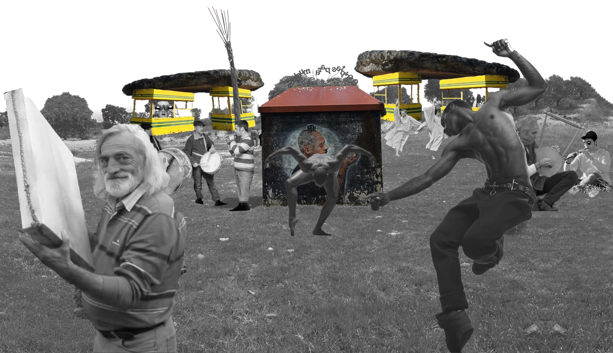
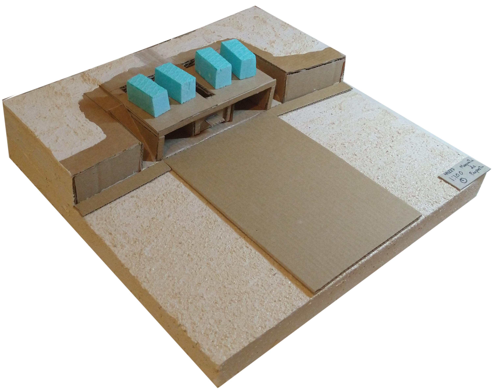
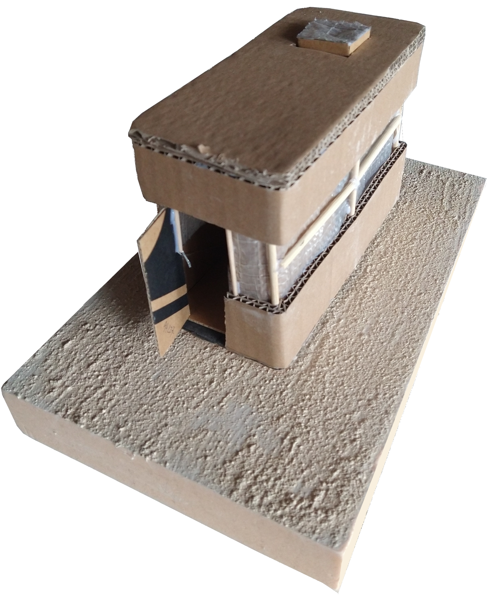
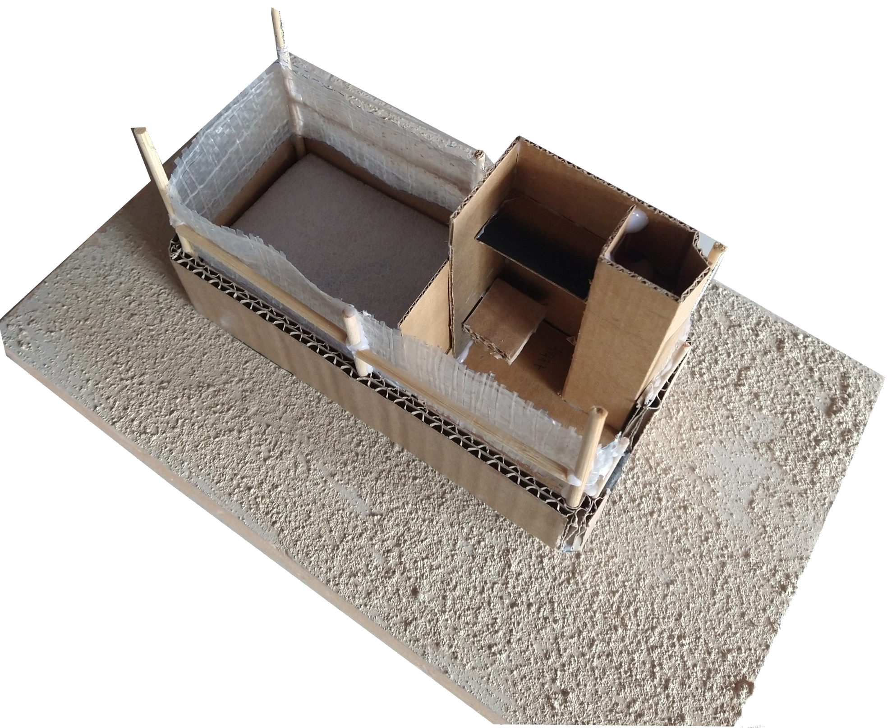

This project was conducted on the small village of Morille, where art is buried in an extensive grave. This remembered me of tales of ancient celtiberian rituals, megaliths and its monumentality. I aimed to create a ritual place, on a small scale, with the necessary lodging for 4 seperate artists, utilizing the present cabins on the spot, past country’s fronties cabins, to foster the graving act (the artist has to fell like of the frontier between life and death).

Ritual scale model


Personal scale model